The eleventh hour
Time until 11:00 a.m. on November 11, 2026 (your local time).
--days
--hours
--minutes
--seconds
What is Remembrance Day?
Every November 11, Canadians pause to honour the men and women who served and died in wartime and in peacekeeping, from the First World War to the present day.
The date marks the armistice that ended fighting on the Western Front at 11:00 a.m. on November 11, 1918: the eleventh hour of the eleventh day of the eleventh month.
By the numbers
~66,000
Canadians died in the First World War (1914–1918).
~45,000
Canadians died in the Second World War (1939–1945).
516
Canadians died in the Korean War (1950–1953).
A short history
- 1918 The armistice takes effect on November 11, ending the First World War.
- 1921 Armistice Day is first observed in Canada; the poppy is adopted as a symbol of remembrance.
- 1931 The name changes from Armistice Day to Remembrance Day, widening the focus to all who served.
- 2000 An unidentified Canadian soldier is brought home from France and laid to rest at the National War Memorial in Ottawa.
Symbols & traditions
The poppy
Inspired by Lieutenant-Colonel John McCrae's poem "In Flanders Fields" (1915). Canadians wear a poppy over the heart from late October until November 11.
Two minutes of silence
At 11:00 a.m., Canadians observe two minutes of silence, often marked by the Last Post and the Rouse.
Wreaths
Wreaths are laid at cenotaphs and memorials by veterans, families, officials and community groups.
Canadian songs and poems for remembrance day
In Flanders Fields
By: John McCrae
In Flanders fields the poppies blow
Between the crosses, row on row,
That mark our place; and in the sky
The larks, still bravely singing, fly
Scarce heard amid the guns below.
We are the Dead. Short days ago
We lived, felt dawn, saw sunset glow,
Loved and were loved, and now we lie,
In Flanders fields.
Take up our quarrel with the foe:
To you from failing hands we throw
The torch; be yours to hold it high.
If ye break faith with us who die
We shall not sleep, though poppies grow
In Flanders fields.
O Canada (Official National Anthem of Canada since 1980.
De facto national anthem since 1939).
Music by: Calixa Lavallée
Original French lyrics by: Adolphe-Basile Routhier, English lyrics by: Stanley Weir
O Canada!
Our home and native land!
True patriot love in all of us command.
With glowing hearts we see thee rise,
The True North strong and free!
From far and wide,
O Canada, we stand on guard for thee.
God keep our land glorious and free!
O Canada, we stand on guard for thee.
O Canada, we stand on guard for thee.
The song also has an additional three verses, although only the first verse (the one shown above) has official status.
O Canada! Where pines and maples grow.
Great prairies spread and lordly rivers flow.
How dear to us thy broad domain,
From East to Western Sea,
Though land of hope for all who toil!
Thou True North, strong and free!
God keep our land glorious and free!
O Canada, we stand on guard for thee.
O Canada, we stand on guard for thee.
O Canada! Beneath thy shining skies
May stalwart sons and gentle maidens rise,
To keep thee steadfast through the years
From East to Western sea,
Our own beloved native land!
Our True North, strong and free!
God keep our land glorious and free!
O Canada, we stand on guard for thee.
O Canada, we stand on guard for thee.
Ruler Supreme, who hearest humble prayer,
Hold our dominion within thy loving care;
Help us to find, O God, in thee
A lasting, rich reward,
As waiting for the Better Day,
We ever stand on guard.
God keep our land glorious and free!
O Canada, we stand on guard for thee.
O Canada, we stand on guard for thee.
God Save the King (Royal Anthem of Canada)
Author unknown
God save our gracious King
Long live our noble King,
God save The King:
Send him victorious,
Happy and glorious,
Long to reign over us:
God save The King.
The song has additional verses but only the first verse has official status.
The Maple Leaf Forever (historical unofficial anthem of Canada)
By: Alexander Muir
In days of yore, from Britain's shore,
Wolfe, the dauntless hero, came
And planted firm Britannia's flag
On Canada's fair domain.
Here may it wave, our boast, our pride
And, joined in love together,
The thistle, shamrock, rose entwine
The Maple Leaf forever!
The Maple Leaf, our emblem dear,
The Maple Leaf forever!
God save our King and Heaven bless
The Maple Leaf forever!
At Queenston Heights and Lundy's Lane,
Our brave fathers, side by side,
For freedom, homes and loved ones dear,
Firmly stood and nobly died;
And those dear rights which they maintained,
We swear to yield them never!
Our watchword evermore shall be
"The Maple Leaf forever!"
The Maple Leaf, our emblem dear,
The Maple Leaf forever!
God save our King and Heaven bless
The Maple Leaf forever!
Our fair Dominion now extends
From Cape Race to Nootka Sound;
May peace forever be our lot,
And plenteous store abound:
And may those ties of love be ours
Which discord cannot sever,
And flourish green o'er freedom's home
The Maple Leaf forever!
The Maple Leaf, our emblem dear,
The Maple Leaf forever!
God save our King and Heaven bless
The Maple Leaf forever!
On merry England's far famed land
May kind heaven sweetly smile,
God bless old Scotland evermore
and Ireland's Em'rald Isle!
And swell the song both loud and long
Till rocks and forest quiver!
God save our King and Heaven bless
The Maple Leaf forever!
The Maple Leaf, our emblem dear,
The Maple Leaf forever!
God save our King and Heaven bless
The Maple Leaf forever!
Heart of Oak (Official march of the Royal Canadian Navy)
Music by: Dr. William Boyce
Lyrics by: David Garrick
Come cheer up my lads, tis to glory we steer,
To add something new to this wonderful year;
Tis to honor we call, you as free men not slaves,
For who are so free as the sons of the waves.
Heart of oak are our ships, jolly tars our men,
We always are ready, steady boys, steady.
We'll fight and we'll conquer again, and again.
We ne'er see our foes, but we wish them to stay;
They always see us and they wish us away;
If they run we will follow, we will drive them ashore;
For if they won't fight we can do no more.
Heart of oak are our ships, jolly tars our men,
We always are ready, steady boys, steady.
We'll fight and we'll conquer again, and again.
They say they'll invaded us, these terrible foes;
Frighten our women, our children, our beaus;
But should their flat-bottoms, in darkness get o'er,
Stout Britons they'll find to defeat them ashore.
Heart of oak are our ships, jolly tars our men,
We always are ready, steady boys, steady.
We'll fight and we'll conquer again, and again.
Britannia triumphant, her ships rule the seas,
Her watchword is justice, her password is free.
So come cheer up my lads, with one heart let us sing,
Our soldiers, our sailors, our statesmen, our King.
Heart of oak are our ships, jolly tars our men,
We always are ready, steady boys, steady.
We'll fight and we'll conquer again, and again.
Heart of oak are our ships, jolly tars our men,
We always are ready, steady boys, steady.
We'll fight and we'll conquer again, and again.
How Canadians remember
- Attend a local ceremony at your community cenotaph.
- Watch the National Ceremony from the National War Memorial in Ottawa.
- Wear a poppy, donated through the Royal Canadian Legion's Poppy Campaign.
- Observe two minutes of silence at 11:00 a.m.
- Learn the story of a family member or local veteran who served.
Remembrance Day is a federal holiday, but whether it is a statutory day off varies by province and territory. Check your local listings for ceremony times.
Canadian Memorials
Vimy Ridge memorial in France
Location: Route départementale 55, Chem. des Canadiens, 62580 Givenchy-en-Gohelle, France
More information:
Veterans Canada
The National War Memorial
Location: Wellington St, Ottawa, ON K1P 5A4
More information:
Veterans Canada
Halifax Memorial
Location: Sailors Memorial Way, Halifax, NS B3H 0B4
More information:
Veterans Canada
Other memorials
More information:
Veterans Canada
Canadian Flags
National Flag of Canada
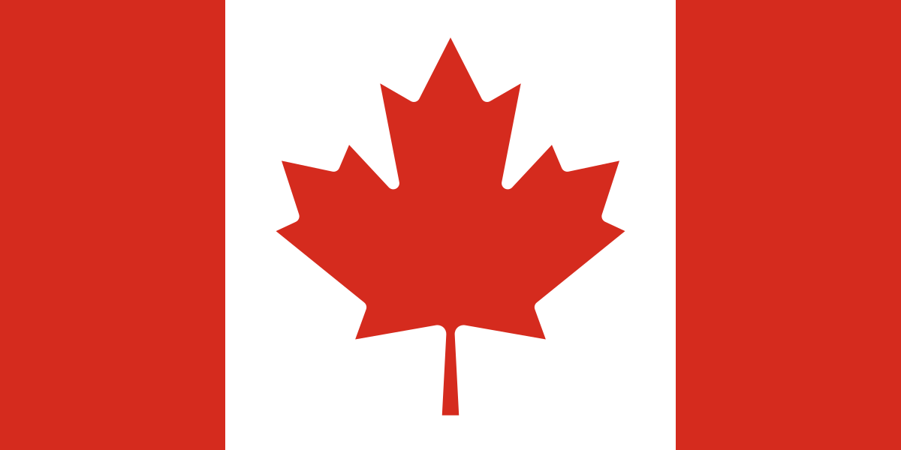
Canda's official flag used since 1965.
Canadian Red Ensign (1957)
Unofficial flag of Canada used from 1957 to 1965.
Canadian Red Ensign (1921)
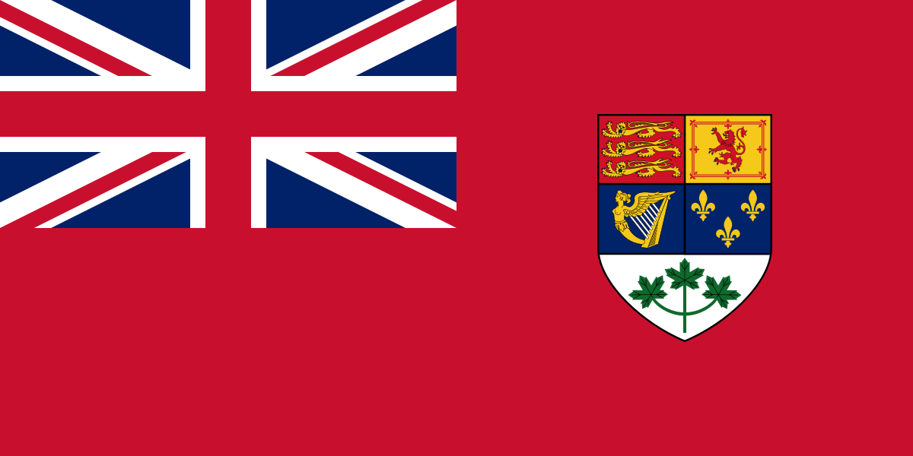
Unofficial flag of Canada used from 1921 to 1957 (World War II).
Canadian Red Ensign (1907-1922)
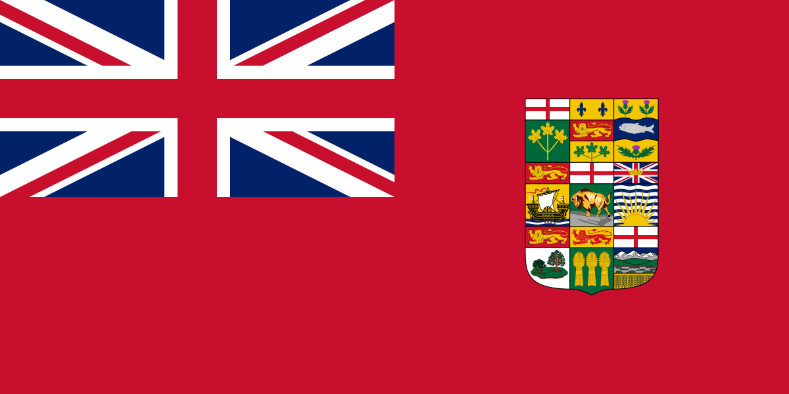
Unofficial flag of Canada used from 1907 to 1922 (World War I).
Royal Union Flag
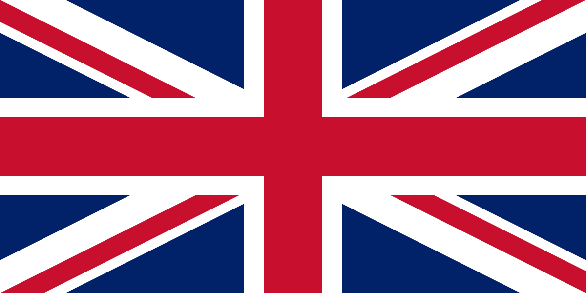
Flag of Canada before 1965. Continues to have official status in Canada.
Flag of Canadian Army
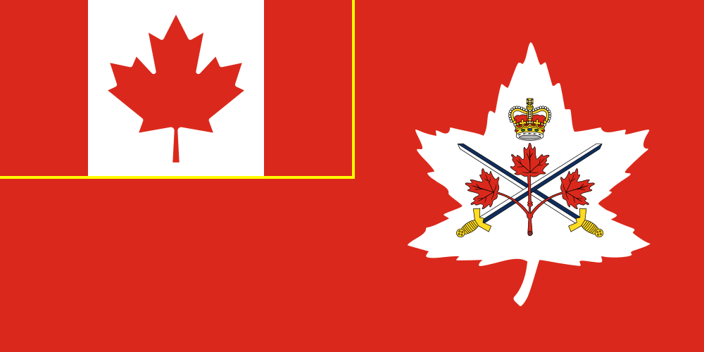
Current flag of the Canadian Army.
Flag of Canadian Army (1939)
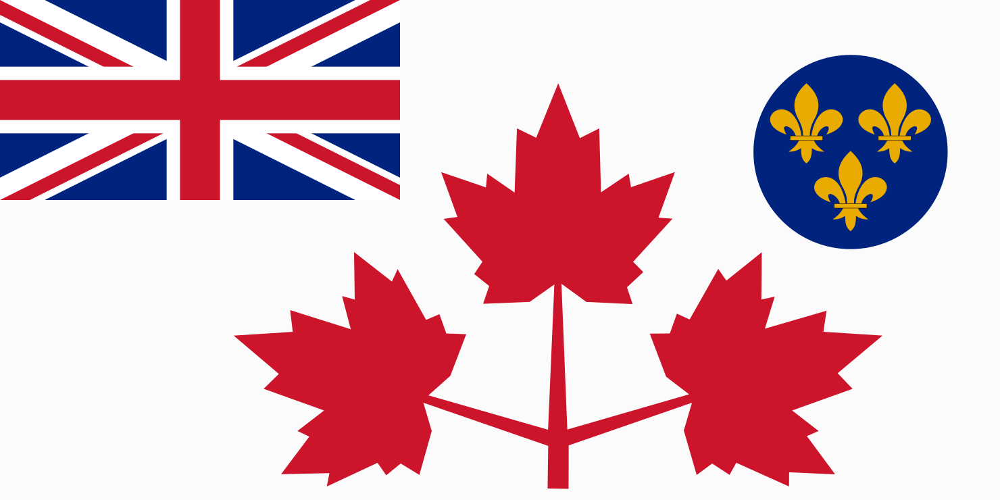
Flag of the Canadian army from 1939-1944 (World War II).
Flag of Royal Canadian Navy
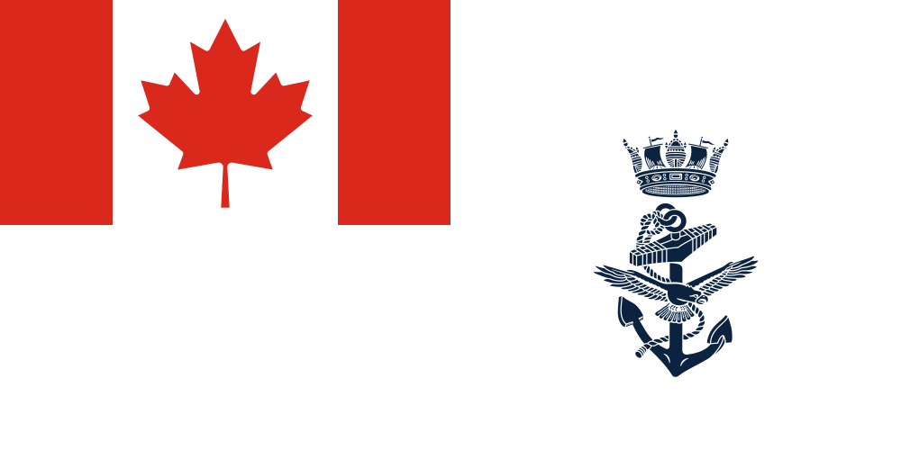
Current ensign of the Royal Canadian Navy. This was used as the Jack of the Maritime Command from 1968 to 2013.
Jack of the Royal Canadian Navy (1957)
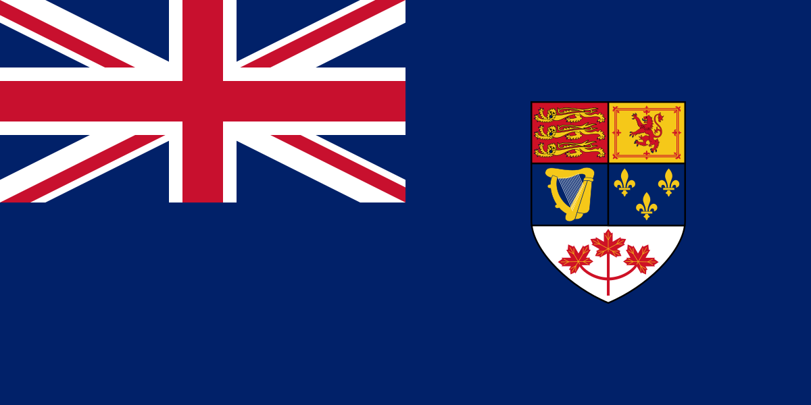
Jack of the Royal Canadian Navy from 1957 to 1965.
Jack of the Royal Canadian Navy (1921)
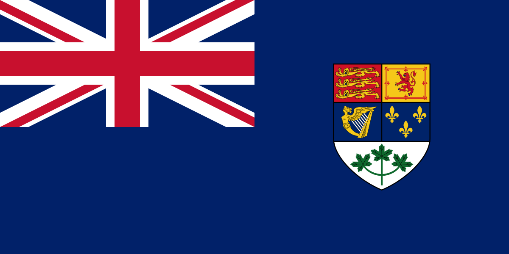
Jack of the Royal Canadian Navy from 1921 to 1957 (World War II).
Jack of the Royal Canadian Navy (1911)
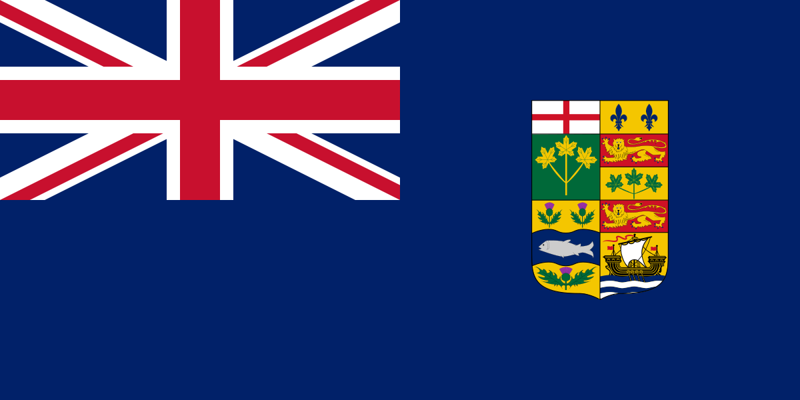
Jack of the Royal Canadian Navy from 1911 to 1921 (World War I).
Ensign of the Royal Canadian Air Force
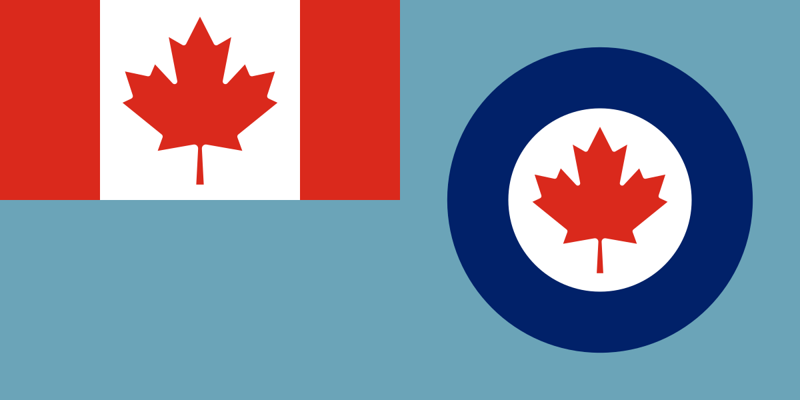
Current ensign of the Royal Canadian Air Force.
Ensign of the Royal Canadian Air Force (1941)
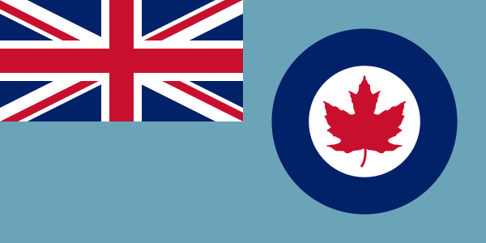
Ensign of the Royal Canadian Air Force from 1941 to 1968 (World War II).